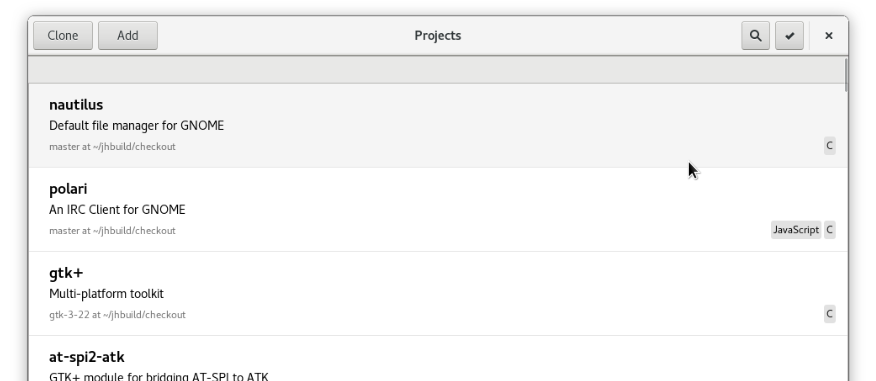
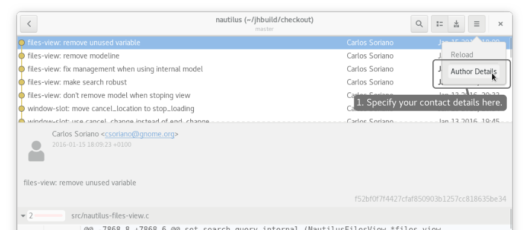
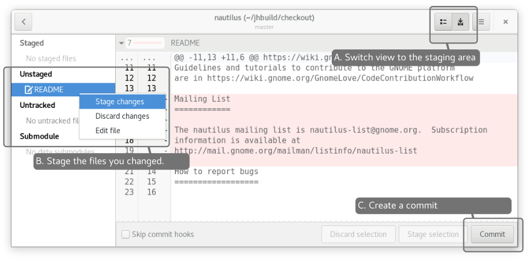
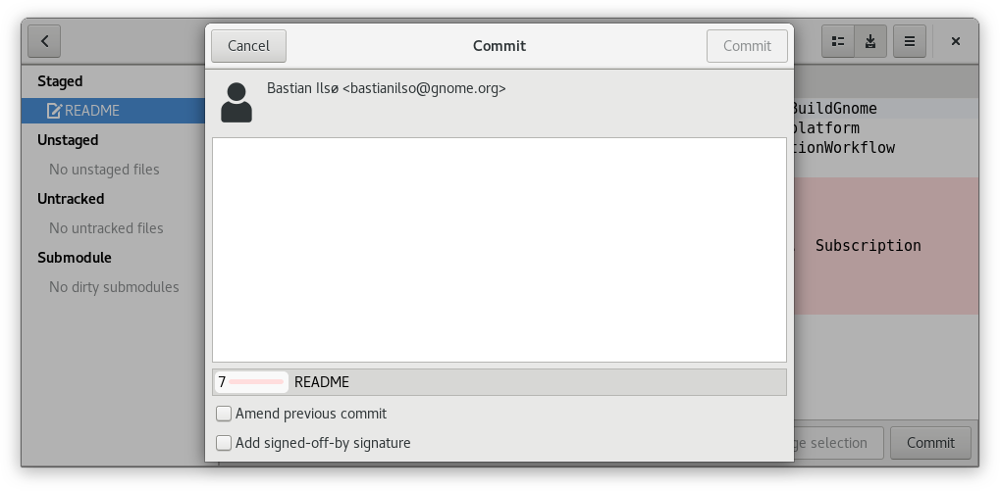
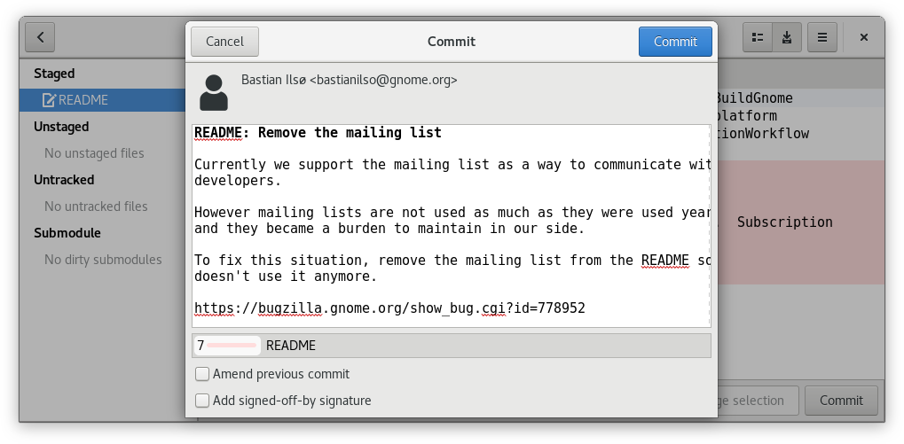
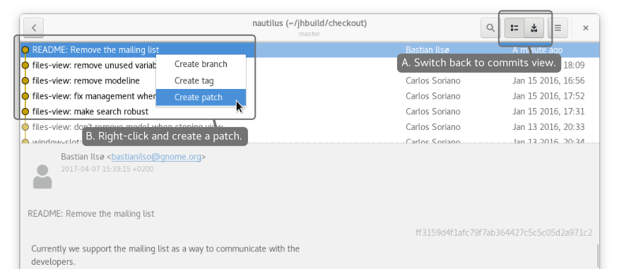

Open your project

Set your author details
Providing this information means that the work is credited to you. Other developers can later see who made the patch and get in touch if they have questions.

Create a commit with your changes
A commit means you make your changes permanent. Go to the staging area, stage your files and press the commit button.

And now you can do the actual commit, clicking the "Commit" button and it will show:

Write the commit message following the guidelines
The commit message should follow a standard format: a short title of 50 chars length, followed by a longer explanation of 72 chars length each line, followed by a link to the relevant bug. Your commit message should look something like this:

Create a patch
Also important for your patches is to provide one patch per issue and not do unrelated modifications, for example, style changes.
To submit a patch, you have to select the commit you want to create a patch from and click "Create a patch"

Now you're ready to attach the patch to your bug Report in Bugzilla
Follow up on feedback
Your patch will likely go through several iterations of patch review. Wait to get comments about how you can improve the patch, and then make modifications if they are necessary. Then create a new patch and attach it to the bug. This kind of review process is standard practice within GNOME and helps to ensure that our code is all high-quality. Once your patch looks good, the reviewer will merge it in.
If your patch is accepted in the first review, you don't need to do this step, at least for this patch. Wait until the maintainer pushes your commit to the master branch.
If you need to modify your patch we need to reset the code changes to the previous commit, but with your changes in the stage area. To do so we need a terminal command (copy your commit message since it will be removed):
Now change the files you need and put them in the stage area as we learnt and commit again. Now you can attach the patch to Bugzilla again and repeat the process until your patch is accepted.